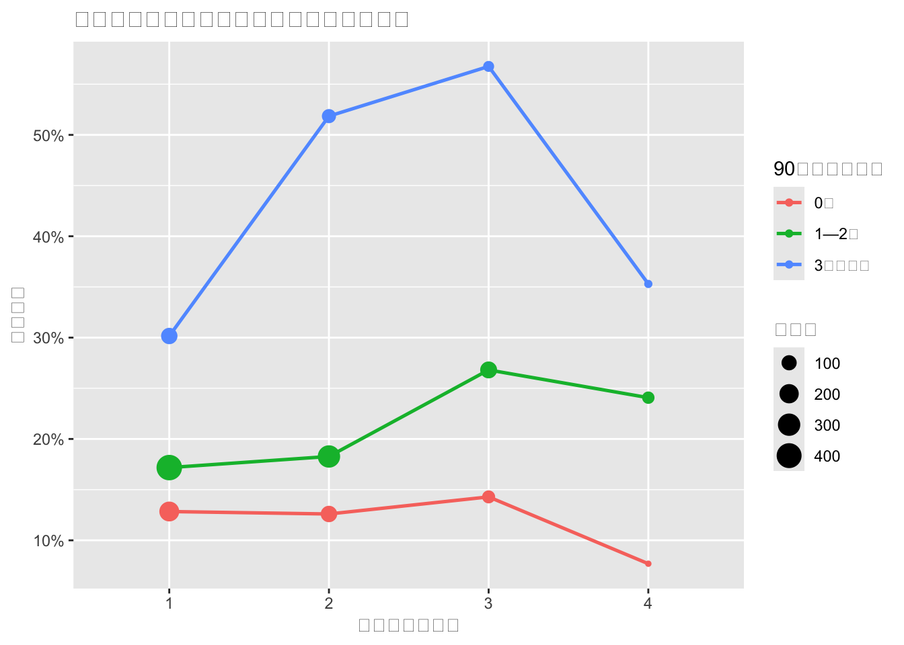
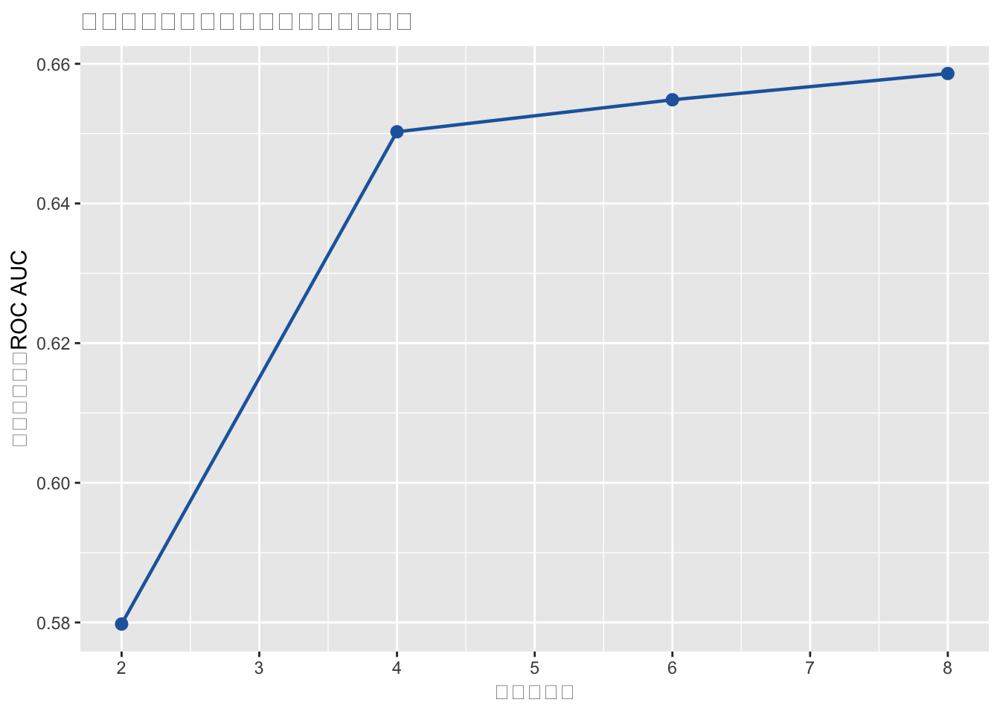
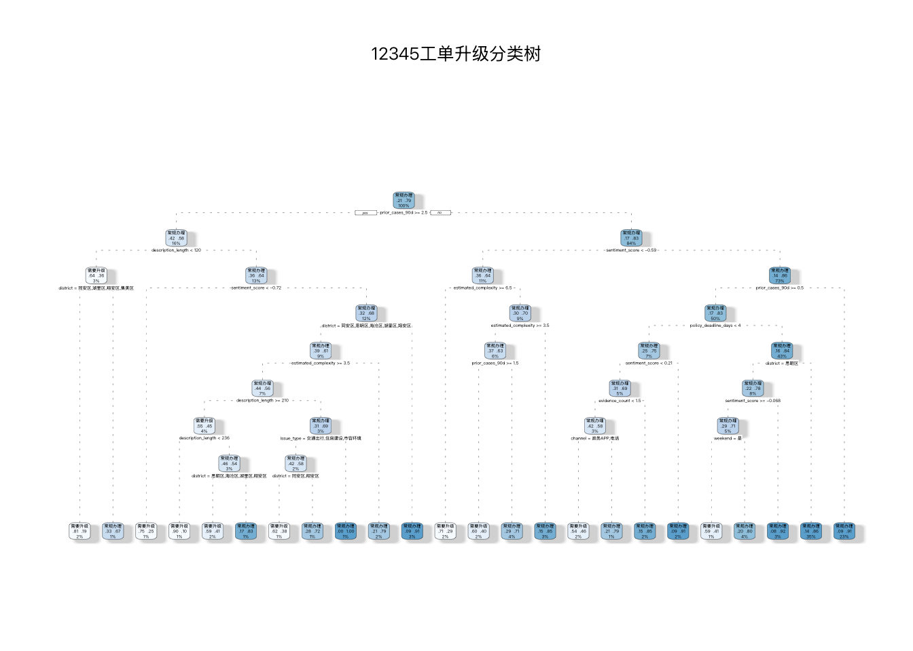
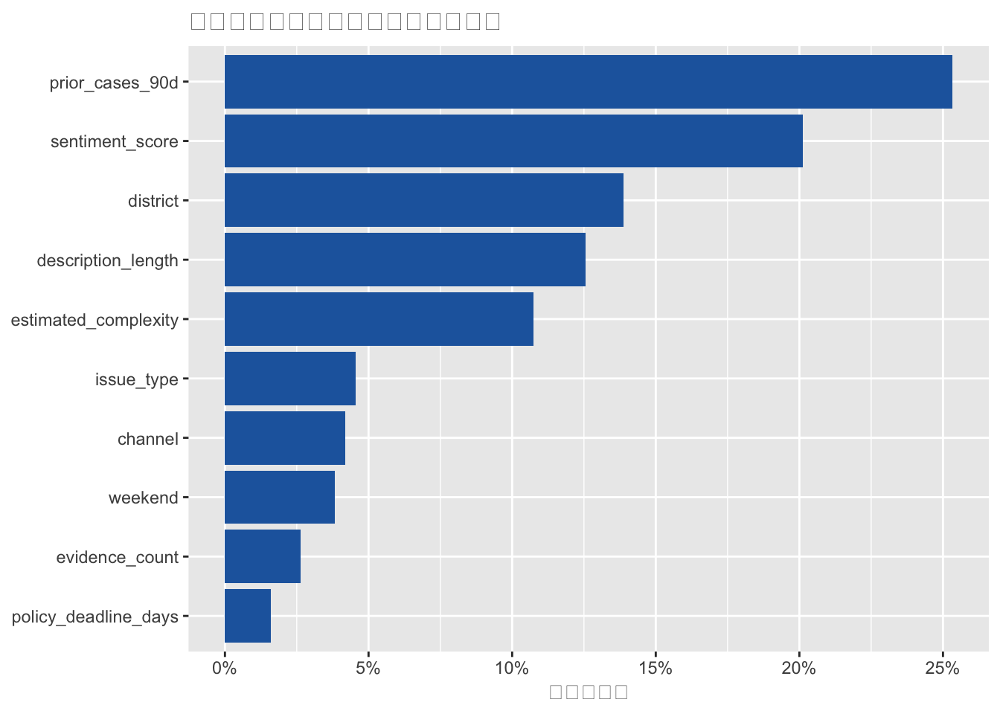

install.packages(c(
"tidymodels",
"rpart",
"rpart.plot",
"systemfonts",
"ragg",
"knitr",
"scales"
))机器学习（三）：决策树、剪枝与可解释分类
以12345工单跨部门升级识别为例
本讲的中心问题
热线管理部门希望在工单进入系统后，识别哪些事项可能需要跨部门协调和升级处置。本讲关注的不是“哪类群众更麻烦”，而是：能否利用工单受理时已经获得的信息，形成透明、可复核的分流规则？
1 课程安排与学习目标
本讲按照 2课时（每课时45分钟） 设计。
| 课时 | 核心内容 | 课堂产出 |
|---|---|---|
| 第1课时 | 决策树结构、递归分割、不纯度、过拟合 | 读懂一棵工单升级分类树 |
| 第2课时 | recipe、交叉验证、剪枝、指标与规则解释 | 建立并评价一棵可解释、可审查的候选树 |
完成本讲后，学生应能：
- 解释根节点、内部节点、分支、叶节点和树深度；
- 说明决策树如何用递归分割降低类别混杂程度；
- 区分训练误差、验证误差和测试误差；
- 解释
cost_complexity、tree_depth和min_n； - 使用
recipe、decision_tree()和workflow()建立分类树； - 根据ROC AUC、PR AUC、敏感度、特异度、精确率、F1和混淆矩阵评价模型；
- 将树的路径翻译成管理规则，同时识别其治理边界。
首次运行前安装R包
本讲不需要安装 vip，也不需要额外安装整个 tidyverse。tidymodels 已经加载本文件使用的 dplyr、ggplot2、tibble、purrr、recipes、rsample、tune、workflows 和 yardstick 等组件。
2 从公共管理问题定义分类任务
2.1 为什么工单分流适合用决策树？
公共服务热线中的部分事项涉及多个责任部门、重复投诉或临近办理期限。如果全部依赖人工逐条研判，容易出现标准不一致；如果只按事项类别机械分流，又可能忽略工单历史和处置情境。
决策树的优势在于：
- 能表达“如果……并且……”的非线性规则；
- 自动识别变量之间的条件组合；
- 不要求变量服从正态分布；
- 单棵树可以转换为较直观的管理规则；
- 便于讨论漏报、误报和人工复核责任。
但模型输出只能表示预测关联。它不能证明“增加办理时长导致升级”，更不能成为拒绝受理或降低服务标准的依据。
2.2 决策树的适用条件
| 较适合 | 使用前需要检查 | 不宜直接使用 |
|---|---|---|
| 目标为连续值或类别；关系可能非线性；存在交互；需要规则解释 | 目标定义、类别比例、样本量、预测时点、缺失机制、规则稳定性 | 样本很少；类别极端稀少；需要平滑外推；把叶节点规则当作因果机制 |
先明确预测时点
本讲假定模型在工单初步登记和自动特征提取后运行。因此只能使用当时已经获得的信息。最终处置结果、事后满意度和实际结案时长都属于未来信息，若放入特征会造成数据泄漏。
3 准备自带的模拟热线数据
3.1 数据生成逻辑
下面模拟1600条工单。数据只用于教学，不对应任何真实城市或真实投诉者。
set.seed(2026)
n_cases <- 1600
hotline_base <- tibble(
case_id = sprintf("CASE%05d", seq_len(n_cases)),
district = factor(sample(
c("思明区", "湖里区", "集美区", "海沧区", "同安区", "翔安区"),
n_cases, replace = TRUE,
prob = c(0.19, 0.18, 0.17, 0.13, 0.17, 0.16)
)),
issue_type = factor(sample(
c("市容环境", "住房建设", "交通出行", "噪声扰民", "公共服务"),
n_cases, replace = TRUE,
prob = c(0.25, 0.18, 0.21, 0.20, 0.16)
)),
channel = factor(sample(
c("电话", "微信", "网站", "政务APP"),
n_cases, replace = TRUE,
prob = c(0.45, 0.24, 0.14, 0.17)
)),
weekend = factor(sample(c("是", "否"), n_cases, TRUE, c(0.26, 0.74))),
# 下列变量假定可在受理时从系统历史或文本自动提取。
prior_cases_90d = pmin(rpois(n_cases, lambda = 1.3), 7),
departments_involved = sample(
1:4, n_cases, replace = TRUE, prob = c(0.48, 0.32, 0.15, 0.05)
),
description_length = pmax(20, round(rlnorm(n_cases, log(180), 0.55))),
sentiment_score = pmax(-1, pmin(1, rnorm(n_cases, -0.08, 0.48))),
evidence_count = pmin(rpois(n_cases, lambda = 1.6), 8),
policy_deadline_days = sample(
c(2, 3, 5, 7, 10, 15), n_cases, replace = TRUE,
prob = c(0.05, 0.10, 0.27, 0.30, 0.18, 0.10)
),
estimated_complexity = pmax(1, pmin(10, round(rnorm(n_cases, 4.8, 1.8))))
)
# 模拟存在阈值效应和交互关系的升级概率。
# 这些系数只用于课堂制造可学习的规律，不是现实政策参数。
escalation_score <- with(
hotline_base,
-3.6 +
0.42 * prior_cases_90d +
0.55 * (departments_involved >= 3) +
0.65 * (issue_type == "住房建设") +
0.45 * (issue_type == "市容环境") +
0.80 * (sentiment_score < -0.55) +
0.65 * (policy_deadline_days <= 3) +
0.18 * estimated_complexity +
0.75 * (prior_cases_90d >= 3 & departments_involved >= 2) +
0.55 * (description_length > 320 & evidence_count >= 3)
)
hotline_data <- hotline_base |>
mutate(
escalation_probability = plogis(escalation_score),
needs_escalation = factor(
if_else(runif(n_cases) < escalation_probability, "需要升级", "常规办理"),
# yardstick默认将第一个水平视为关注事件。
levels = c("需要升级", "常规办理")
)
) |>
# 真实建模时看不到生成概率，因此删除它。
select(-escalation_probability)
# 模拟少量文本情绪和复杂度缺失。
set.seed(2027)
hotline_data$sentiment_score[sample(seq_len(nrow(hotline_data)), 22)] <- NA
hotline_data$estimated_complexity[sample(seq_len(nrow(hotline_data)), 18)] <- NA
hotline_data3.2 数据审计
hotline_audit <- hotline_data |>
summarise(
cases = n(),
escalation_cases = sum(needs_escalation == "需要升级"),
escalation_rate = mean(needs_escalation == "需要升级"),
missing_sentiment = sum(is.na(sentiment_score)),
missing_complexity = sum(is.na(estimated_complexity)),
duplicated_id = sum(duplicated(case_id))
)
hotline_audit数据共有 1600 条工单，其中需要升级 339 条，占 21.2%。如果模型把所有工单都预测为“常规办理”，准确率仍可能看起来不低，因此必须查看对“需要升级”工单的敏感度。
情绪得分缺失 22 条、复杂度缺失 18 条；主键重复数为 0。真实项目应先判断缺失是否由特定渠道、事项类型或技术故障造成，再决定填补方式。
hotline_data |>
mutate(
prior_group = cut(
prior_cases_90d,
breaks = c(-Inf, 0, 2, Inf),
labels = c("0次", "1—2次", "3次及以上")
)
) |>
group_by(prior_group, departments_involved) |>
summarise(
escalation_rate = mean(needs_escalation == "需要升级"),
cases = n(),
.groups = "drop"
) |>
ggplot(aes(
x = factor(departments_involved), y = escalation_rate,
colour = prior_group, group = prior_group
)) +
geom_line(linewidth = 0.9) +
geom_point(aes(size = cases)) +
scale_y_continuous(labels = scales::percent) +
labs(
x = "初步涉及部门数", y = "升级比例",
colour = "90天内同类工单", size = "工单数",
title = "升级风险可能来自变量组合，而非单个变量"
)
4 第1课时：决策树怎样形成规则？
4.1 树的基本结构
一棵分类树包含：
- 根节点：全部训练样本的起点；
- 内部节点：进行一次判断，例如“90天内同类工单是否不少于3次”；
- 分支：判断结果对应的路径；
- 叶节点：停止分割后的预测结果；
- 树深度：从根节点到最深叶节点经历的分割次数。
决策树不断提出二元问题，把特征空间划分为若干区域。每个叶节点通常用该区域中的多数类别作为预测，并用事件比例作为预测概率。
4.2 如何选择一次分割？
分类树希望分割后的节点更加“纯”。常见指标是基尼不纯度：
\[ Gini = 1-\sum_{k=1}^{K}p_k^2 \]
二分类节点中，如果两类各占50%，基尼不纯度为0.5；如果全部属于同一类，则为0。算法会比较候选变量和切点，选择使加权不纯度下降最多的分割。
不纯度下降不等于政策重要性
某变量被优先分割，说明它在当前样本中有助于区分类别。它不证明该变量是问题的根本原因，也不意味着通过行政干预改变该变量就会产生同样幅度的结果变化。
4.3 为什么树容易过拟合？
如果不加限制，树可以继续分割，直到叶节点只剩少量工单。这样训练误差很低，但规则可能只是记住噪声。控制复杂度的三个核心参数是：
| 参数 | 含义 | 值增大时的一般影响 |
|---|---|---|
tree_depth |
树允许达到的最大深度 | 规则更复杂、交互更多、过拟合风险上升 |
min_n |
节点继续分割所需的最小样本数 | 树更保守、叶节点更稳定 |
cost_complexity |
对增加分支的惩罚强度 | 惩罚越大，修剪越强、树越简单 |
模型复杂度应在训练数据内部通过重采样选择，不能根据最终测试期反复调整。
5 第2课时：建立、剪枝并评价分类树
5.1 分层划分训练集和测试集
本例把每条工单视为相对独立的横截面记录，因此使用分层随机划分。如果数据具有明显时间顺序、同一投诉者重复出现或街道聚类结构，应改用时间划分或分组划分。
set.seed(2026)
hotline_split <- initial_split(
hotline_data,
prop = 0.80,
strata = needs_escalation
)
hotline_train <- training(hotline_split)
hotline_test <- testing(hotline_split)
split_balance <- bind_rows(
hotline_train |> count(needs_escalation) |> mutate(dataset = "训练集"),
hotline_test |> count(needs_escalation) |> mutate(dataset = "测试集")
) |>
group_by(dataset) |>
mutate(proportion = n / sum(n)) |>
ungroup()
split_balance训练集有 1279 条、测试集有 321 条。分层划分使两部分的升级比例接近。测试集从现在开始封存，只用于最后一次评价。
5.2 用 recipe 定义预处理
recipe() 是预处理蓝图。它声明目标变量、预测变量以及缺失值和新类别的处理规则；这些规则只在每个训练折中估计，再应用于相应验证折，避免数据泄漏。
tree_recipe <- recipe(
needs_escalation ~ district + issue_type + channel + weekend +
prior_cases_90d + departments_involved + description_length +
sentiment_score + evidence_count + policy_deadline_days +
estimated_complexity,
data = hotline_train
) |>
# 中位数比均值更不容易受极端值影响。
step_impute_median(all_numeric_predictors()) |>
# 处理分类变量缺失和未来出现的新类别。
step_unknown(all_nominal_predictors()) |>
step_novel(all_nominal_predictors()) |>
step_zv(all_predictors())
tree_recipe树模型不依赖欧氏距离，也不比较线性系数大小，因此通常不需要标准化数值变量。打印结果中的 Trained: FALSE 表示当前只是方案，还没有提前从测试集学习中位数或类别水平。
5.3 交叉验证与参数网格
set.seed(2026)
hotline_folds <- vfold_cv(
hotline_train,
v = 5,
strata = needs_escalation
)
tree_model <- decision_tree(
cost_complexity = tune(),
tree_depth = tune(),
min_n = tune()
) |>
set_engine("rpart") |>
set_mode("classification")
tree_workflow <- workflow() |>
add_recipe(tree_recipe) |>
add_model(tree_model)
# 4×4×4=64组候选参数，规模足够演示且不会过度拖慢课堂运行。
tree_grid <- grid_regular(
cost_complexity(range = c(-4, -1)),
tree_depth(range = c(2L, 8L)),
min_n(range = c(10L, 70L)),
levels = 4
)
classification_metrics <- metric_set(
roc_auc, # 排序能力：正类是否通常获得更高风险分数
pr_auc, # 少数类识别：同时关注召回率和精确率
accuracy, # 全部工单中预测正确的比例
sens, # 实际需要升级的工单中，被识别出的比例
spec, # 实际常规办理的工单中，被正确排除的比例
ppv, # 被模型预警的工单中，真正需要升级的比例
f_meas # 敏感度和精确率的调和平均
)
set.seed(2026)
tree_tune <- tune_grid(
tree_workflow,
resamples = hotline_folds,
grid = tree_grid,
metrics = classification_metrics,
control = control_grid(save_pred = TRUE)
)
tree_best_results <- show_best(tree_tune, metric = "roc_auc", n = 8)
tree_best_results最优候选方案的平均ROC AUC约为 0.659，对应 cost_complexity = 1e-04、最大深度 8、min_n = 30。这些参数来自训练集内部的交叉验证，没有查看测试集。
ROC AUC衡量排序能力。例如AUC为0.75表示随机抽取一条需要升级和一条常规办理工单时，模型大约有75%的机会把前者排在更高风险位置；它不是“75%的工单预测正确”。
collect_metrics(tree_tune) |>
filter(.metric == "roc_auc") |>
group_by(tree_depth) |>
summarise(mean_auc = max(mean), .groups = "drop") |>
ggplot(aes(tree_depth, mean_auc)) +
geom_line(linewidth = 0.8, colour = "#2166AC") +
geom_point(size = 2.5, colour = "#2166AC") +
scale_x_continuous(breaks = scales::pretty_breaks()) +
labs(
x = "最大树深度", y = "该深度下最佳ROC AUC",
title = "更深的树并不必然带来更好的验证表现"
)
如果曲线在较浅深度已趋于平坦，应优先选择更简单、较稳定的树，而不是追求训练集上的细碎规则。
5.4 拟合最终树并查看规则
best_tree_params <- select_best(tree_tune, metric = "roc_auc")
final_tree_workflow <- finalize_workflow(tree_workflow, best_tree_params)
final_tree_fit <- fit(final_tree_workflow, data = hotline_train)
tree_engine <- extract_fit_engine(final_tree_fit)
# 使用基础图形绘制树；par()设置中文字体。
old_par <- par(family = cn_font)
rpart.plot::rpart.plot(
tree_engine,
type = 2,
extra = 104,
fallen.leaves = TRUE,
box.palette = "Blues",
branch.lty = 3,
shadow.col = "grey85",
main = "12345工单升级分类树"
)
par(old_par)读树时从根节点开始：满足条件走左或右分支，直到叶节点。叶节点会显示预测类别、类别概率和样本占比。课堂上应挑选2—3条主要路径翻译成管理语言，而不是逐节点朗读。
5.5 剪枝前后：更复杂不等于更好
为了把“过拟合”从抽象概念变成可以观察的结果，下面建立一棵几乎不剪枝的树，并与交叉验证选出的候选树比较。这里仍然只使用训练集和训练集内部的交叉验证，不查看封存测试集。
# 建立一棵限制很少的树：允许更深的结构和更小的叶节点。
unpruned_tree_model <- decision_tree(
cost_complexity = 0,
tree_depth = 15,
min_n = 2
) |>
set_engine("rpart") |>
set_mode("classification")
unpruned_tree_workflow <- workflow() |>
add_recipe(tree_recipe) |>
add_model(unpruned_tree_model)
# 用与调参阶段相同的折叠评价未剪枝树，保证比较口径一致。
set.seed(2026)
unpruned_resamples <- fit_resamples(
unpruned_tree_workflow,
resamples = hotline_folds,
metrics = metric_set(roc_auc)
)
unpruned_cv_auc <- unpruned_resamples |>
collect_metrics() |>
filter(.metric == "roc_auc") |>
pull(mean)
# 拟合未剪枝树只是为了统计结构规模，不参与参数选择。
unpruned_tree_fit <- fit(unpruned_tree_workflow, data = hotline_train)
unpruned_tree_engine <- extract_fit_engine(unpruned_tree_fit)
pruning_comparison <- tibble(
model = c("限制很少的树", "交叉验证选择的剪枝树"),
internal_nodes = c(
sum(unpruned_tree_engine$frame$var != "<leaf>"),
sum(tree_engine$frame$var != "<leaf>")
),
leaf_nodes = c(
sum(unpruned_tree_engine$frame$var == "<leaf>"),
sum(tree_engine$frame$var == "<leaf>")
),
validation_roc_auc = c(
unpruned_cv_auc,
tree_best_results$mean[1]
)
)
pruning_comparison表中“内部节点”和“叶节点”表示规则的复杂程度。如果限制很少的树拥有更多叶节点，但交叉验证ROC AUC没有同步提高，说明新增分支主要在记忆训练样本中的局部波动。剪枝不是为了提高训练集表现，而是主动放弃不稳定的细碎规则，以换取更好的样本外稳定性。
如何解释一条路径？
假如某条路径是“90天内同类工单较多 → 涉及部门不少于2个 → 预测需要升级”，它表示这些条件组合在训练数据中对应较高升级概率。它可以作为人工复核线索，但不意味着所有满足条件的工单都必须升级，也不意味着重复投诉本身造成了升级。
5.6 在封存测试集上评价
tree_test_pred <- bind_cols(
hotline_test,
predict(final_tree_fit, hotline_test, type = "prob"),
predict(final_tree_fit, hotline_test, type = "class")
)
tree_test_metrics <- classification_metrics(
tree_test_pred,
truth = needs_escalation,
estimate = .pred_class,
.pred_需要升级,
event_level = "first"
)
tree_test_metrics测试集ROC AUC为 0.609，表示模型区分高、低风险工单的排序能力；PR AUC为 0.307，在“需要升级”属于少数类别时更值得关注。
准确率为 76.0%。更重要的是：敏感度为 29.4%，表示实际需要升级的工单中有这一比例被识别；特异度为 88.5%，表示常规办理工单中有这一比例被正确排除。
精确率为 40.8%，表示被模型标记为“需要升级”的工单中有这一比例确实需要升级；F1为 0.342，用于综合观察敏感度和精确率。精确率低意味着人工复核负担较重，敏感度低则意味着漏掉了较多真正需要协调的事项。
tree_confusion <- tree_test_pred |>
count(needs_escalation, .pred_class, name = "cases")
tree_confusion在测试集中，模型正确识别需要升级 20 条，漏报 48 条；误报 29 条，正确排除 224 条。
漏报可能使复杂事项错过协调时机；误报会占用督办和跨部门协调资源。阈值选择应取决于这两种成本，而不是把0.50当作固定规则。
5.7 与“全部常规办理”基准比较
baseline_accuracy <- mean(hotline_test$needs_escalation == "常规办理")
tibble(
model = c("决策树", "全部预测为常规办理"),
accuracy = c(
tree_test_metrics$.estimate[tree_test_metrics$.metric == "accuracy"],
baseline_accuracy
),
sensitivity = c(
tree_test_metrics$.estimate[tree_test_metrics$.metric == "sens"],
0
)
)基准模型虽然可能获得 78.8% 的准确率，但敏感度为0，因为它一条需要升级的工单也抓不到。这说明类别不平衡时不能只报告准确率。
5.8 哪些变量参与了主要分割？
tree_importance <- tibble::enframe(
tree_engine$variable.importance,
name = "feature",
value = "importance"
) |>
mutate(importance = importance / sum(importance)) |>
slice_max(importance, n = 10)
tree_importance |>
ggplot(aes(importance, reorder(feature, importance))) +
geom_col(fill = "#2166AC") +
scale_x_continuous(labels = scales::percent) +
labs(
x = "相对重要性", y = NULL,
title = "重要性反映分割贡献，不是因果效应"
)
本次树中排名第一的变量是 prior_cases_90d，相对重要性约为 25.3%。该结果只表示它在这棵树的分割中贡献较大。连续变量往往拥有更多候选切点，重要性可能偏高；相关变量也可能互相替代。
6 单棵树为什么可能不稳定？
单棵树容易转化成规则，但也属于高方差模型：训练数据稍有变化，分割点、后续分支和叶节点数量都可能变化。下面从训练集中抽取两个略有差异的子样本，使用相同的已选参数重新拟合，观察树结构是否完全一致。
# 只扰动训练数据，不接触封存测试集。
set.seed(11)
hotline_sample_a <- hotline_train |>
slice_sample(prop = 0.75)
set.seed(22)
hotline_sample_b <- hotline_train |>
slice_sample(prop = 0.75)
tree_fit_a <- fit(final_tree_workflow, data = hotline_sample_a)
tree_fit_b <- fit(final_tree_workflow, data = hotline_sample_b)
# 提取一棵树的“结构签名”，便于在课堂上快速比较。
extract_tree_signature <- function(fitted_workflow, sample_name) {
engine <- extract_fit_engine(fitted_workflow)
split_variables <- engine$frame$var[
engine$frame$var != "<leaf>"
]
# 极端情况下，如果子样本没有形成分割，保留明确的文字结果。
root_variable <- if (length(split_variables) > 0) {
first(split_variables)
} else {
"无分割"
}
main_split_variables <- if (length(split_variables) > 0) {
paste(head(unique(split_variables), 5), collapse = "、")
} else {
"无分割"
}
tibble(
sample = sample_name,
root_variable = root_variable,
main_split_variables = main_split_variables,
leaf_nodes = sum(engine$frame$var == "<leaf>")
)
}
tree_stability <- bind_rows(
extract_tree_signature(tree_fit_a, "训练子样本A"),
extract_tree_signature(tree_fit_b, "训练子样本B")
)
tree_stability即使两棵树的根节点相同，也应继续比较主要分割变量和叶节点数量。局部规则发生变化并不一定意味着模型错误，而是说明单棵树对样本扰动比较敏感。下一讲的随机森林会通过对许多棵树进行投票，降低这种不稳定性。
7 与课程作业衔接：先完成模型可行性检查
学生在把自己的数据带入机器学习作业前，应先完成下面的检查，而不是直接把所有变量放进模型。
| 检查问题 | 需要写入作业的内容 |
|---|---|
| 要预测什么？ | 明确目标变量及其取值含义 |
| 在什么时间做预测？ | 明确模型运行的时间节点 |
| 哪些信息当时已经可得？ | 删除事后变量和结果泄漏变量 |
| 每一行代表什么？ | 说明个人、工单、地区或“地区—年份”等分析单位 |
| 正类比例是多少？ | 判断类别是否不平衡以及准确率是否可能误导 |
| 是否存在时间顺序或重复主体？ | 选择随机、时间或分组划分 |
| 为什么使用决策树？ | 说明非线性、交互和规则解释是否符合研究问题 |
| 更需要避免漏报还是误报？ | 联系政策风险、行政成本和人工复核能力 |
本讲在机器学习作业中的位置
单棵决策树是一个候选模型，不是自动成为最终答案。作业中仍需把它与朴素基准及其他候选模型放在相同的数据划分和评价指标下比较。第四次课将继续介绍随机森林、梯度提升、阈值选择、概率校准和分组审计。
8 其他公共管理应用场景
| 场景 | 目标变量 | 树模型可以回答 | 需要特别防范 |
|---|---|---|---|
| 社会救助 | 是否需要人工复核 | 哪类申请组合更容易出现材料异常 | 不得用敏感身份替代实质审核 |
| 应急管理 | 是否升级响应等级 | 哪些气象和暴露条件组合风险较高 | 低频灾害样本不足、漏报代价高 |
| 公共卫生 | 是否需要重点随访 | 哪些健康与服务条件组合提示高风险 | 隐私、标签偏差与资源排挤 |
| 行政执法 | 是否安排复查 | 哪些历史记录组合提示复发风险 | 历史执法偏差可能被模型放大 |
| 政策执行 | 项目是否延期 | 哪些组织与任务条件组合关联延期 | 预测延期不等于识别责任原因 |
9 本讲总结
- 决策树通过递归分割形成“如果—那么”规则；
- 基尼不纯度衡量节点中的类别混杂程度；
- 深树训练误差低，但更容易过拟合；
tree_depth、min_n和cost_complexity共同控制复杂度；- 参数必须在训练集内部通过重采样选择；
- 分类模型应同时报告ROC AUC、PR AUC、敏感度、特异度、精确率、F1和混淆矩阵；
- 树路径和变量重要性都是预测证据，不是因果证据；
- 单棵树容易解释，但可能对训练样本的轻微变化比较敏感；
- 可解释规则仍需人工复核、成本分析和公平性审计。
9.1 离堂检查
- 为什么一棵完全生长的树通常不适合直接部署？
min_n增大时，树一般会变简单还是变复杂？- 为什么“全部预测为常规办理”可能有较高准确率却毫无预警价值？
- 一条工单满足高风险路径，是否意味着必须自动升级？
下一讲将进入随机森林与梯度提升：如何用许多棵树降低单棵树的不稳定性，并进一步提高非线性预测能力。
10 附录A：基尼不纯度、熵与信息增益
熵定义为：
\[ Entropy=-\sum_{k=1}^{K}p_k\log(p_k) \]
基尼不纯度和熵通常会选出相近的分割。教学和应用中不必把精力放在两者细微差异上，更应关注数据泄漏、树复杂度、重采样和测试期表现。
11 附录B：成本复杂度剪枝
剪枝通过最小化以下目标，在拟合程度和叶节点数量之间取舍：
\[ R_\alpha(T)=R(T)+\alpha|T| \]
其中 \(R(T)\) 是树的误差，\(|T|\) 是叶节点数，\(\alpha\) 对应 cost_complexity。较大的 \(\alpha\) 会删除只能带来少量误差改善的分支。
12 附录C：装袋法为什么能稳定单棵树？
装袋法反复从训练数据中进行有放回抽样，在每个自助样本上训练一棵较深的树，再对预测结果取平均或投票。单棵树属于高方差模型：数据稍有变化，分割点可能明显改变；多棵树平均后，随机波动会部分抵消。
装袋法仍让每棵树在全部特征中寻找最佳分割。如果少数强变量总是支配根节点，各棵树仍会高度相似。下一讲的随机森林会在每个节点随机抽取一部分候选特征，进一步降低树之间的相关性。
13 附录D：下次课预告——阈值、代价敏感学习与概率校准
默认0.50阈值并不一定适合治理决策。可在历史验证预测中比较不同阈值下的：
- 漏报数量与漏报成本；
- 误报数量与人工复核负担；
- 敏感度、特异度和精确率；
- 不同地区、渠道和事项类型的错误差异。
如果模型输出要被解释为真实概率，还应使用校准曲线或Brier分数检查“预测30%风险的工单是否约有30%实际升级”。本讲只建立这些概念，具体的阈值比较、校准曲线和Brier分数将在第四次课中结合随机森林展开。
14 附录E：模型治理与公平性
真实部署前至少应回答：
- 哪些变量可能是身份、地区或资源差异的代理变量？
- 历史升级记录是否反映了部门偏好，而不是真实复杂度？
- 不同区、渠道和事项类型中的漏报率是否接近？
- 模型只提供排序建议，还是自动触发行政行动？
- 谁负责人工复核、异议处理、版本记录和定期再训练？
- 模型失效或数据漂移时，是否存在人工回退机制？
15 附录F：中文图形与运行问题
本文件使用 ragg_png 和系统字体。如果中文显示为方框：
- macOS确认存在“苹方”，Windows确认存在“微软雅黑”；
- Linux安装
Noto Sans CJK SC； - 运行
systemfonts::system_fonts()查看R识别的字体； - 删除旧的
_freeze缓存后重新渲染； - 使用Render完整运行文件，不要只运行后半部分代码块。